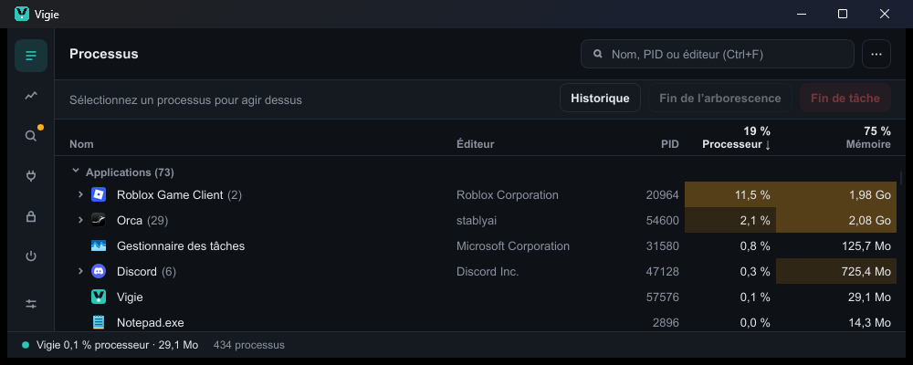
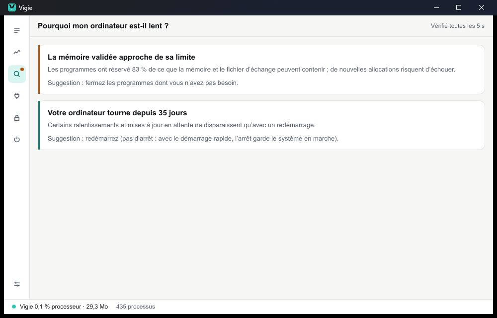
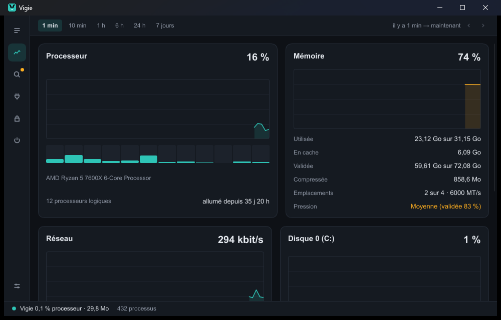
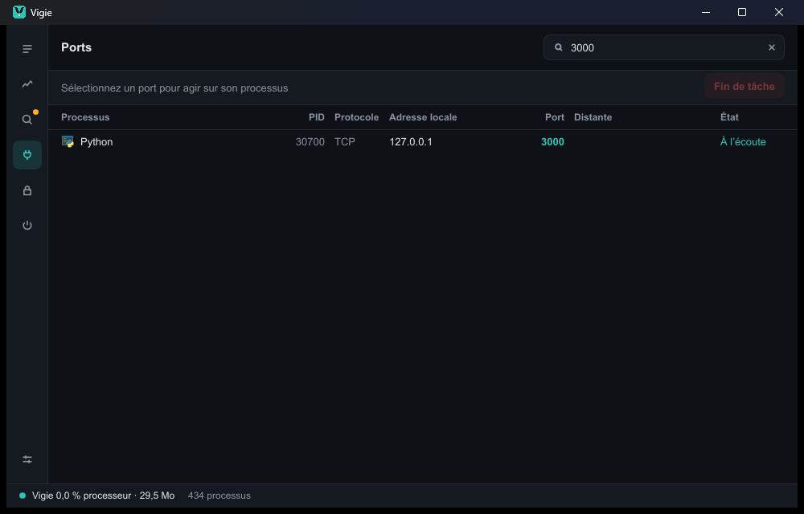
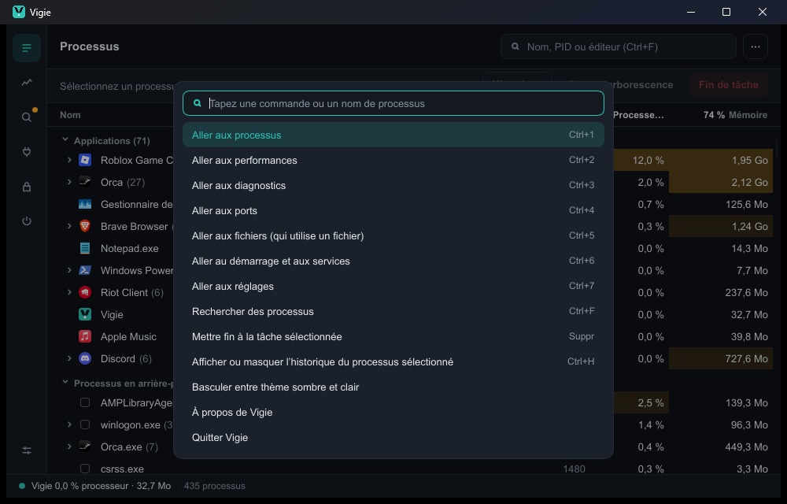

Pourquoi mon ordinateur est-il lent ?
Vigie surveille processeur, mémoire, disques et processus qui grossissent, puis explique ce qu'il trouve, avec ses preuves et une seule suggestion. Il peut vous prévenir par une notification, sans vous noyer.
Vigie montre ce qui tourne sur votre ordinateur, ce qui le ralentit et qui tient vos ports et vos fichiers. Lui-même se fait oublier.
Version 0.1.0, Windows 10 et 11. macOS et Linux arrivent. Les fichiers ne sont pas encore signés : Windows affiche un avertissement au premier lancement.

Tout ce que vous attendez d'un gestionnaire de tâches, plus les questions qu'on se pose vraiment devant un ordinateur lent.
Vigie surveille processeur, mémoire, disques et processus qui grossissent, puis explique ce qu'il trouve, avec ses preuves et une seule suggestion. Il peut vous prévenir par une notification, sans vous noyer.

Processeur, mémoire, réseau, disques et GPU, de la dernière minute aux sept derniers jours. Survolez une courbe pour lire une valeur, faites-la glisser pour revenir en arrière.

Tapez un port : Vigie trouve le processus qui l'utilise et peut l'arrêter, après confirmation. Glissez un fichier verrouillé : il liste les programmes qui le gardent ouvert.

Ctrl+K ouvre la palette de commandes. Ctrl+1 à Ctrl+7 changent de vue. Et si vous le souhaitez, Ctrl+Maj+Échap ouvre Vigie à la place du Gestionnaire des tâches.

Vigie est écrit en Rust. Son propre coût est mesuré à chaque étape et fait partie de son cahier des charges.
Moins de 1 % d'un cœur et environ 9 Mo de mémoire privée. Il ralentit de lui-même en arrière-plan.
Avant d'arrêter quoi que ce soit, Vigie demande confirmation et nomme ce qui va s'arrêter. Il ne touche jamais aux processus du système.
Pas de compte, pas de télémétrie, rien ne sort de votre machine. En français et en anglais, en thème clair ou sombre.